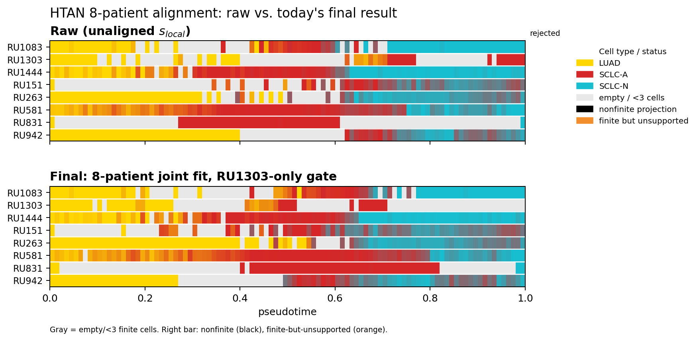

<title>Alignment status update</title>
<meta name="description" content="Raw vs. today's final HTAN 8-patient alignment result, with the numbers behind it.">
<link rel="preconnect" href="https://fonts.googleapis.com">
<link rel="stylesheet" href="https://fonts.googleapis.com/css2?family=Fraunces:opsz,wght@9..144,400;9..144,500;9..144,600&family=IBM+Plex+Sans:wght@400;500;600&family=IBM+Plex+Mono:wght@400;500&display=swap">
<style>
  :root {
    --bg: #f5f4ef;
    --surface: #ffffff;
    --ink: #1d2321;
    --ink-soft: #56625d;
    --ink-faint: #8a9490;
    --accent: #2a6f6a;
    --accent-ink: #163f3c;
    --accent-soft: #dcebe8;
    --rule: #dcd9cd;
    --good: #2f7d4f;
    --good-soft: #e3f0e7;
    --warn: #9a6a17;
    --warn-soft: #f4ead2;
    --shadow: 0 1px 2px rgba(28,35,33,.04), 0 8px 24px rgba(28,35,33,.06);
    padding-top: env(safe-area-inset-top, 0px);
    padding-bottom: env(safe-area-inset-bottom, 0px);
  }
  @media (prefers-color-scheme: dark) {
    :root:not([data-theme="light"]) {
      --bg: #14181a;
      --surface: #1b2124;
      --ink: #edf1ef;
      --ink-soft: #a6b0ac;
      --ink-faint: #6f7975;
      --accent: #63b6ae;
      --accent-ink: #bfe6e0;
      --accent-soft: #1f3634;
      --rule: #2b3235;
      --good: #74cf9a;
      --good-soft: #1c3327;
      --warn: #e3b158;
      --warn-soft: #3a2e17;
      --shadow: 0 1px 2px rgba(0,0,0,.3), 0 8px 24px rgba(0,0,0,.35);
    }
  }
  :root[data-theme="dark"] {
    --bg: #14181a;
    --surface: #1b2124;
    --ink: #edf1ef;
    --ink-soft: #a6b0ac;
    --ink-faint: #6f7975;
    --accent: #63b6ae;
    --accent-ink: #bfe6e0;
    --accent-soft: #1f3634;
    --rule: #2b3235;
    --good: #74cf9a;
    --good-soft: #1c3327;
    --warn: #e3b158;
    --warn-soft: #3a2e17;
    --shadow: 0 1px 2px rgba(0,0,0,.3), 0 8px 24px rgba(0,0,0,.35);
  }

  * { box-sizing: border-box; }
  body {
    margin: 0;
    background: var(--bg);
    color: var(--ink);
    font-family: "IBM Plex Sans", ui-sans-serif, system-ui, sans-serif;
    font-size: 16px;
    line-height: 1.55;
    padding: 40px 16px 64px;
  }
  main {
    max-width: 760px;
    margin: 0 auto;
  }
  .eyebrow {
    font-family: "IBM Plex Mono", ui-monospace, monospace;
    font-size: 12px;
    letter-spacing: .09em;
    text-transform: uppercase;
    color: var(--accent-ink);
    background: var(--accent-soft);
    display: inline-block;
    padding: 4px 10px;
    border-radius: 4px;
    margin-bottom: 18px;
  }
  h1 {
    font-family: "Fraunces", Georgia, serif;
    font-optical-sizing: auto;
    font-weight: 600;
    font-size: clamp(28px, 5vw, 38px);
    line-height: 1.12;
    letter-spacing: -.01em;
    margin: 0 0 10px;
    text-wrap: balance;
  }
  .subhead {
    color: var(--ink-soft);
    font-size: 16.5px;
    max-width: 58ch;
    margin: 0 0 6px;
  }
  .meta {
    font-family: "IBM Plex Mono", ui-monospace, monospace;
    font-size: 12.5px;
    color: var(--ink-faint);
    margin: 0 0 36px;
  }

  figure {
    margin: 0 0 40px;
    background: var(--surface);
    border: 1px solid var(--rule);
    border-radius: 10px;
    box-shadow: var(--shadow);
    overflow: hidden;
  }
  figure img {
    display: block;
    width: 100%;
    height: auto;
    background: #fff;
  }
  figcaption {
    padding: 14px 20px 18px;
    border-top: 1px solid var(--rule);
    font-size: 13.5px;
    color: var(--ink-soft);
  }
  figcaption b { color: var(--ink); font-weight: 600; }

  h2 {
    font-family: "Fraunces", Georgia, serif;
    font-weight: 600;
    font-size: 21px;
    margin: 44px 0 16px;
    letter-spacing: -.005em;
  }

  .points {
    list-style: none;
    margin: 0 0 8px;
    padding: 0;
    display: flex;
    flex-direction: column;
    gap: 14px;
  }
  .points li {
    padding-left: 16px;
    border-left: 3px solid var(--accent);
    color: var(--ink);
  }
  .points li .lede { font-weight: 600; }
  .points li .sub { color: var(--ink-soft); }

  .callout {
    border: 1px solid var(--warn);
    background: var(--warn-soft);
    border-radius: 8px;
    padding: 16px 18px;
    margin: 20px 0 8px;
    font-size: 14.5px;
    color: var(--ink);
  }
  .callout .tag {
    font-family: "IBM Plex Mono", ui-monospace, monospace;
    font-size: 11.5px;
    letter-spacing: .08em;
    text-transform: uppercase;
    color: var(--warn);
    font-weight: 600;
    display: block;
    margin-bottom: 6px;
  }

  table {
    width: 100%;
    border-collapse: collapse;
    margin: 8px 0 4px;
    font-size: 14.5px;
    background: var(--surface);
    border: 1px solid var(--rule);
    border-radius: 8px;
    overflow: hidden;
  }
  caption {
    caption-side: top;
    text-align: left;
    font-size: 13px;
    color: var(--ink-faint);
    padding-bottom: 8px;
  }
  th, td {
    text-align: right;
    padding: 10px 14px;
    border-bottom: 1px solid var(--rule);
    font-variant-numeric: tabular-nums;
    font-family: "IBM Plex Mono", ui-monospace, monospace;
    font-size: 13.5px;
  }
  th:first-child, td:first-child {
    text-align: left;
    font-family: "IBM Plex Sans", sans-serif;
    font-size: 14px;
  }
  thead th {
    font-family: "IBM Plex Sans", sans-serif;
    font-weight: 600;
    font-size: 12.5px;
    color: var(--ink-soft);
    text-transform: uppercase;
    letter-spacing: .04em;
    background: var(--accent-soft);
    border-bottom: 1px solid var(--rule);
  }
  tbody tr:last-child td { border-bottom: none; }
  tr.final td { color: var(--good); font-weight: 600; }
  tr.final td:first-child { color: var(--ink); }

  .conclusion {
    margin-top: 40px;
    padding: 20px 22px;
    background: var(--surface);
    border: 1px solid var(--rule);
    border-left: 4px solid var(--accent);
    border-radius: 8px;
    box-shadow: var(--shadow);
  }
  .conclusion .tag {
    font-family: "IBM Plex Mono", ui-monospace, monospace;
    font-size: 11.5px;
    letter-spacing: .08em;
    text-transform: uppercase;
    color: var(--accent-ink);
    font-weight: 600;
    display: block;
    margin-bottom: 8px;
  }
  .conclusion p { margin: 0; color: var(--ink); }

  footer {
    margin-top: 48px;
    padding-top: 18px;
    border-top: 1px solid var(--rule);
    font-family: "IBM Plex Mono", ui-monospace, monospace;
    font-size: 12px;
    color: var(--ink-faint);
  }

  @media (max-width: 480px) {
    th, td { padding: 8px 8px; font-size: 12.5px; }
  }
</style>

<main>
  <span class="eyebrow">HTAN &middot; scDeBussy alignment</span>
  <h1>Raw input vs. today's final alignment</h1>
  <p class="subhead">Eight-patient LUAD&rarr;SCLC-A&rarr;SCLC-N trajectory alignment, before any
    model and after today's best validated fit.</p>
  <p class="meta">Branch exp/ru1303-ru581-pairwise &middot; commit 4d816ed</p>

  <figure>
    
    <figcaption>
      Same eight patients, same 100 bins, same [0,1] axis, same cell-type colors in both panels
      &mdash; only the horizontal position of each cell changes between <b>Raw</b> and
      <b>Final</b>. Gray = too few cells to plot; the thin bar at right flags rejected or
      low-confidence cells.
    </figcaption>
  </figure>

  <h2>What changed today</h2>
  <ul class="points">
    <li><span class="lede">A real bug got fixed, not just tuned.</span>
      <span class="sub">Patient RU831 has ~20% of its trajectory flagged by preprocessing as
      "not enough cells to trust" &mdash; the alignment code was using that unreliable data
      anyway. It now correctly skips it.</span></li>
    <li><span class="lede">The final fit beats the previous best on two axes at once.</span>
      <span class="sub">Coverage <b>and</b> purity both improve over the strongest earlier
      candidate &mdash; the first configuration this round to do both together.</span></li>
    <li><span class="lede">RU1303's biology separates cleanly from other patients' end-stage
      cells.</span>
      <span class="sub">Spurious overlap drops from 13% to essentially zero.</span></li>
    <li><span class="lede">Agreement on held-out marker genes roughly doubles.</span>
      <span class="sub">Genes the model never saw during fitting line up far better across
      patients than in any earlier candidate.</span></li>
  </ul>

  <h2>The numbers</h2>
  <table>
    <caption>Coverage / purity / held-out concordance / RU1303 overlap with other patients' late-stage cells</caption>
    <thead>
      <tr><th>Method</th><th>Coverage</th><th>Purity</th><th>Held-out concordance</th><th>RU1303 overlap</th></tr>
    </thead>
    <tbody>
      <tr><td>Raw, unaligned</td><td>.865</td><td>.772</td><td>.421</td><td>.531</td></tr>
      <tr><td>Best prior candidate</td><td>.850</td><td>.785</td><td>.419</td><td>.132</td></tr>
      <tr class="final"><td>Today's final fit</td><td>.855</td><td>.786</td><td>.521</td><td>.000</td></tr>
    </tbody>
  </table>

  <div class="callout">
    <span class="tag">Still provisional</span>
    We built a simple, automatic rule that picks out RU1303 as the early-terminating patient
    using only pre-fit data &mdash; no cell labels, no marker genes &mdash; and on today's numbers
    it gets it exactly right. But stress-testing it (dropping patients one at a time, resampling
    with realistic noise) showed the exact decision only holds up about half the time, and one
    specific patient's removal flips it outright. The mechanism is right in spirit; the current
    threshold isn't yet something we'd trust on a new cohort.
  </div>

  <h2>Tomorrow</h2>
  <ul class="points">
    <li><span class="lede">Replace the yes/no gate with a confidence score.</span>
      <span class="sub">Instead of a hard cutoff, express how confident we are that each
      patient's trajectory is partial &mdash; and let that confidence set pricing continuously,
      rather than flipping a switch. Validated first on the same small pairwise checks used
      throughout this work, before touching the full cohort again.</span></li>
  </ul>

  <div class="conclusion">
    <span class="tag">Bottom line</span>
    <p>Today's fit is a real, measured improvement over the previous best candidate on coverage,
      purity, and especially on separating RU1303's biology from the rest of the cohort &mdash;
      and one genuine pipeline bug got fixed along the way. The rule for deciding which patients
      get special handling isn't robust enough to call final yet, so this is the best
      <i>validated</i> fit so far, not the finished model.</p>
  </div>

  <footer>Full write-up: JOE_UPDATE.md &middot; EXPERIMENT_SUMMARY.md &middot; NEXT_STEPS.md</footer>
</main>
